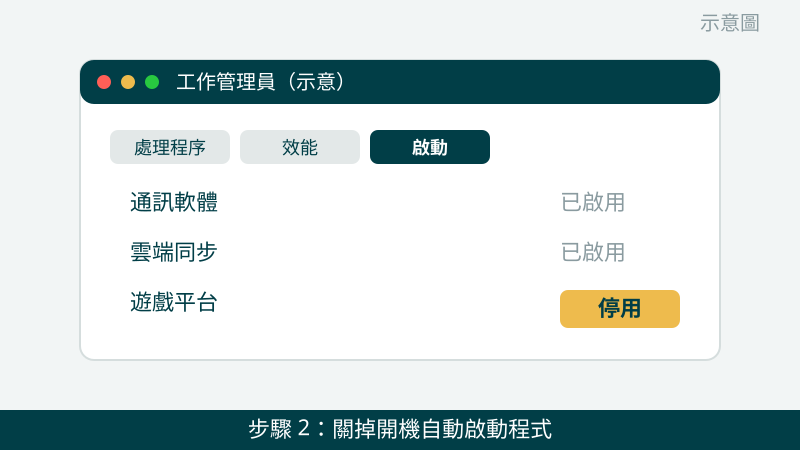
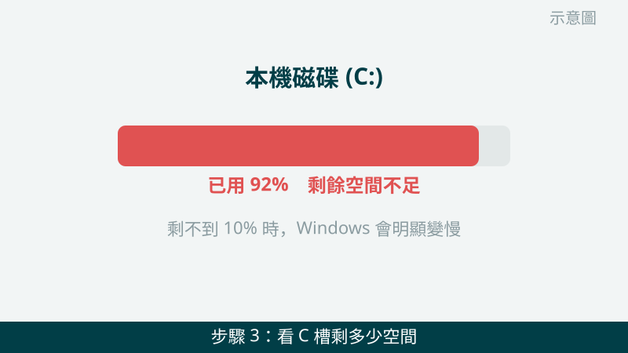
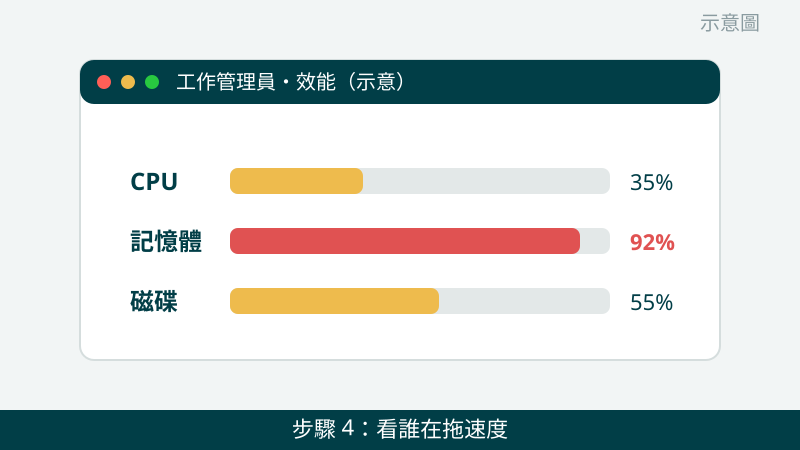

開機要等好幾分鐘、點個資料夾都要轉圈圈，確實很惱人。但請先放心：變慢的原因常常是軟體和空間問題，不一定是硬體壞掉。先照下面的順序檢查，一步一步縮小範圍，很多人整理完就順很多了。
開始之前先跟您說明一個判斷原則：「突然變慢」和「一直都很慢」是兩種故事。突然變慢，通常是最近裝了什麼、更新了什麼、或硬碟開始出狀況；一直都很慢，比較像是配備本來就不夠用，或系統用太久沒整理。您回想一下屬於哪一種，檢查時會更有方向。
變慢的畫面先傳給我們看
把工作管理員的效能頁面拍下來傳 LINE，CPU、記憶體、硬碟哪一個在拖速度，一看就知道往哪個方向查。先免費評估、報價透明，確認後再預約維修。
電腦變慢卡頓自救檢查清單（由簡到難）
- 1. 先完整重開機一次，不要只用睡眠喚醒。很多人電腦幾週沒真正關機，暫存和背景程式越堆越多。請點「重新啟動」讓它完整重開，開機後先不要急著開程式，感覺一下是不是順一點了。怎麼判斷：重開後明顯變順，代表多半是暫存或背景程式問題；重開還是一樣慢，再往下查。
示意圖（非官方截圖） - 2. 關掉開機自動啟動的程式。在工作列按右鍵 → 開啟「工作管理員」→ 點「啟動」頁籤，把不需要一開機就跟著跑的程式（例如通訊軟體、雲端同步、遊戲平台）改成「停用」。怎麼判斷：開機後桌面出現的速度、風扇安靜下來的時間，就是最直接的改善指標。

示意圖（非官方截圖） - 3. 看系統碟還剩多少空間。開啟「本機」（檔案總管）看 C 槽剩餘空間。如果剩不到 10% 或只剩幾 GB，Windows 會明顯變慢。先把下載資料夾、大型影片、少用的安裝檔移到外接硬碟或 D 槽，再用 Windows 內建「磁碟清理」清掉暫存檔。怎麼判斷：清出空間後重開機，開程式、開資料夾的速度有沒有回來。

示意圖（非官方截圖） - 4. 打開工作管理員，看是誰在拖速度。電腦慢的時候按 Ctrl＋Shift＋Esc 開啟工作管理員 →「效能」頁籤，看 CPU、記憶體、磁碟三個數字：磁碟長期 100% 很可能是傳統硬碟老化或快壞了；記憶體長期 90% 以上，代表同時開的程式超過配備負荷；CPU 長期滿載，先看「處理程序」頁籤是哪個程式在吃。把這頁拍下來傳給我們，判斷會快很多。

示意圖（非官方截圖） - 5. 用 Windows 內建防毒完整掃描一次。開啟「Windows 安全性」→「病毒與威脅防護」→ 選「完整掃描」。惡意軟體躲在背景挖礦或偷跑程式，也是越用越慢的常見原因。怎麼判斷：掃出威脅並清除後，風扇聲和卡頓有沒有跟著消失。提醒您：不要同時裝兩套防毒軟體，兩套互相搶資源反而更慢。
示意圖（非官方截圖） - 6. 感覺一下散熱：風扇是不是一直狂轉、機身是不是很燙。散熱不良會讓 CPU 自動降速保護自己，表現就是越用越慢。先確認出風口有沒有被棉被、牆壁擋住，筆電使用時盡量放在平坦桌面上。怎麼判斷：換到通風處、墊高一點後，速度有沒有回來一些。
示意圖（非官方截圖）
出現這些情況，就別再自己試了
- 硬碟傳出「喀喀」異音、檔案莫名打不開或消失——硬碟可能快壞了，請先停手保資料，不要再反覆重開機測試
- 開機越來越久，最後甚至開不了機、出現藍屏或黑屏
- 想自己拆機清灰塵或換零件但不確定怎麼拆——請先拍照問我們，不要硬拆，拆壞排線或弄斷卡扣反而更貴；筆電電池有膨脹、鼓起的跡象時，更不要自行拆卸或擠壓
- 網路上教的「登錄檔清理」「一鍵加速」工具來路不明，不要隨便下載安裝，以免越清越糟
如果您的電腦是打遊戲、剪影片時才開始卡，也建議順手看一下過熱篇：高負載熱當機和變慢常常是同一件事的兩種表現。我們的檢測會把硬碟健康、記憶體、溫度一起交叉比對，找出真正的瓶頸再報價給您。
常見問題
電腦變慢一定要換電腦嗎？
不一定。很多變慢是開機自動啟動程式太多、磁碟空間快滿、或系統暫存累積造成的，整理完就順很多。只有檢測確認是硬碟老化、記憶體不足這類硬體瓶頸時，我們才會建議升級或換零件，而且會先報價給您確認。
開機很久是不是中毒了？
不一定是中毒。開機慢最常見的原因是開機自動啟動的程式太多，或系統碟空間不足。當然也不能排除惡意軟體，所以本文第 5 步會請您先用 Windows 內建防毒完整掃描一次，掃完還是慢，再往硬體方向查。
變慢的狀況拍照傳 LINE 就可以先判斷嗎？
可以先給方向。把工作管理員的效能頁面、磁碟使用率拍下來傳給我們，通常能先看出是 CPU、記憶體還是硬碟在拖速度；要完全確認，還是需要實機檢測，這部分評估不收費，請放心傳。